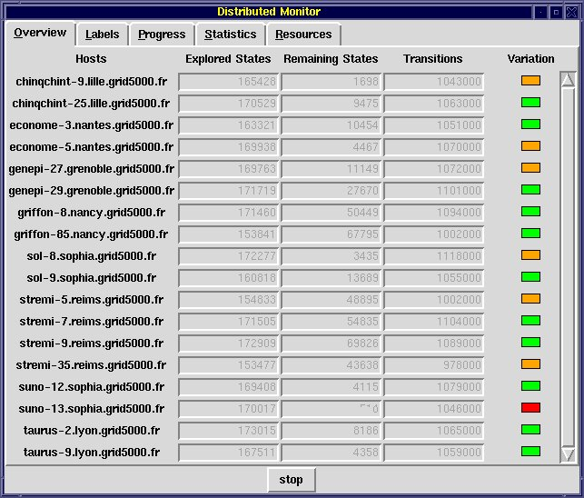
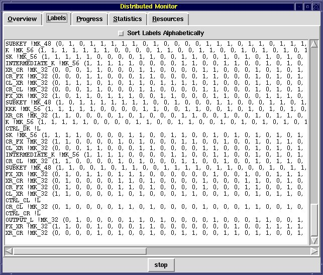
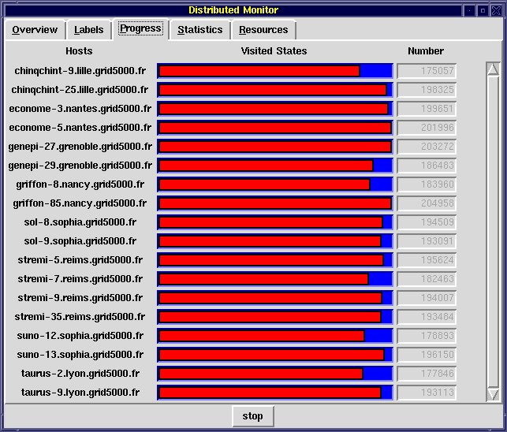
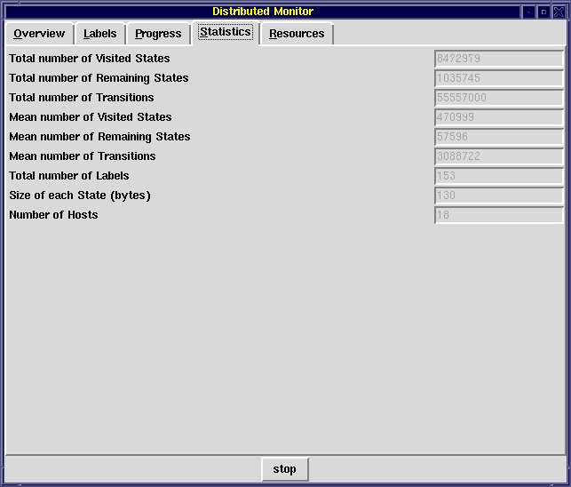
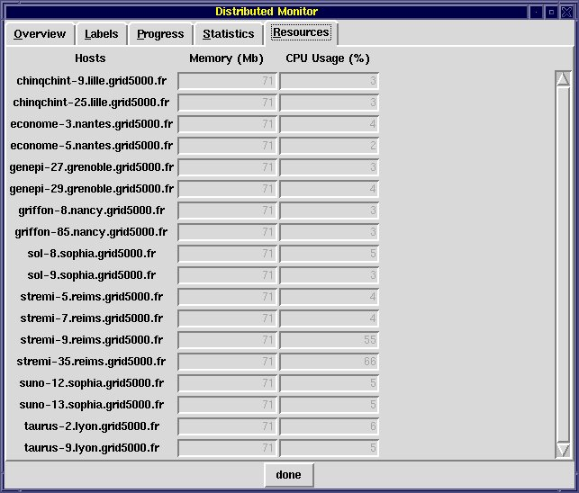

or:
exp.open [exp_opt] spec[.exp] [cc_opt] distributor [distributor_opt] configuration[.gcf] result[.pbg] [global_opt] [instance_opt]
or:
fsp.open [fsp_opt] spec[.lts] [cc_opt] distributor [distributor_opt] configuration[.gcf] result[.pbg] [global_opt] [instance_opt]
or:
lnt.open [lnt_opt] spec[.lnt] [cc_opt] distributor [distributor_opt] configuration[.gcf] result[.pbg] [global_opt] [instance_opt]
or:
lotos.open [lotos_opt] spec[.lotos] [cc_opt] distributor [distributor_opt] configuration[.gcf] result[.pbg] [global_opt] [instance_opt]
or:
seq.open [seq_opt] spec[.seq] [cc_opt] distributor [distributor_opt] configuration[.gcf] result[.pbg] [global_opt] [instance_opt]
Additionally, this program can generate a reduced Labelled Transition System by applying tau-compression or tau-confluence reductions on the fly.
Compared to generator and reductor , which are sequential programs executing on a single machine, distributor implements a distributed algorithm (derived from [GMS01]) that runs on several machines listed in the grid configuration file configuration.gcf; see gcf for information about the GCF format. Each machine is used to generate and store a part of the Labelled Transition System. This allows distributor to exploit the computing resources (memory and processors) provided by many machines.
The current version of distributor does not handle LOTOS programs containing dynamic data types (such as lists, trees, etc.) implemented using pointers, i.e., all LOTOS programs such that the condition
CAESAR_HASH_SIZE_STATE() < CAESAR_SIZE_STATE()is verified, where the two functions
CAESAR_HASH_SIZE_STATE() and CAESAR_SIZE_STATE()
are defined in the caesar_graph
application programming interface.
All the machines used by distributor must have the same processor and operating system; for instance, mixing little-endian and big-endian architectures is not allowed.
As regards the communications between the machines, distributor does not make strong assumptions and only requires standard TCP sockets to be available, together with at least one standard remote connection protocol (such as "rsh/rcp", "ssh/scp", "krsh"/"kcp", etc.). In particular, distributor does not require the existence of a common file system (e.g., NFS, Samba) shared between the machines.
The machine on which distributor is launched (using the command line described in the SYNOPSIS section above) is called the local machine. All other machines are called remote machines. Depending on the contents of configuration.gcf, distributor will launch distributed processes, which are called instances.
Typically, each instance executes on one remote machine, but there can be also several instances per remote machine as well as some instances executing on the local machine.
The generated Labelled Transition System will be stored as a partitioned BCG graph result.pbg; see pbg for information about the PBG format. The resulting PBG file can later be turned into a BCG file using the bcg_merge tool.
The options exp_opt, if any, are passed to exp.open .
The options fsp_opt, if any, are passed to fsp.open .
The options lnt_opt, if any, are passed to lnt.open .
The options lotos_opt, if any, are passed to caesar and to caesar.adt .
The options seq_opt, if any, are passed to seq.open .
The options cc_opt, if any, are passed to the C compiler.
The following options distributor_opt are currently available:
i" by the various BCG tools. This elimination is usually fast (linear in
the size of the state space) and preserves branching bisimulation. Not a
default option.
$DISPLAY environment variable, which gives,
by default, the X server for opening the monitor window. An erroneous value
for display may cause distributor to abort. See X(7) for details. Not a
default option.
To provide for last-minute changes, the contents of the grid configuration file configuration.gcf can be extended and/or modified on the command line using the options global_opt and instance_opt.
The grid configuration file can even be empty, in which case configuration.gcf should be replaced with "-" on the command line (in such case instance_opt should not be empty).
global_opt has the
same syntax as the non-terminal <global_opt> in the grammar of the gcf
format (keeping in mind that some characters meaningful to the shell must
be escaped or quoted properly). If it is non-empty, it is interpreted exactly
as if its contents were inserted in the grid configuration file, at the
end of the <global_opt> list and before the first <instance_opt>.
instance_opt
has the same syntax as a possibly empty list of non-terminals <instance_opt>
in the grammar of the gcf
format (keeping in mind that some characters
meaningful to the shell must be escaped or quoted properly). If it is non-empty,
it is interpreted exactly as if its contents were appended at the end of
the grid configuration file, after the last <instance_opt>.
Thus, the value of the GCF variables can be set in five different ways, listed below by increasing precedence:
<global_opt> in the
grid configuration file, <instance_opt> in the grid configuration file,





It is worth keeping in mind that using the distributed monitor may slow down the state space generation.
Version 2.0 of distributor was developed by Adrian Curic (INRIA/VASY) and Gilles Stragier (INRIA/VASY).
Version 3.0 of distributor implements a modified algorithm by Christophe Joubert (INRIA/VASY). It was rewritten from scratch by Nicolas Descoubes (INRIA/VASY). Damien Bergamini (INRIA/VASY) made a few adaptations. Hubert Garavel and Radu Mateescu fixed various issues and wrote the distributor manual page.
The binary code of distributor is available in $CADP/bin.`arch`/distributor.a
The code for the distributed monitor window is available in $CADP/src/monitor/distributor.tcl
Additional information is available from the CADP Web page located at http://cadp.inria.fr
Directives for installation are given in files $CADP/INSTALLATION_*.
Recent changes and improvements to this software are reported and commented in file $CADP/HISTORY.
[GMS01] Hubert Garavel, Radu Mateescu, and Irina Smarandache. Parallel State Space Construction for Model-Checking. In Matthew B. Dwyer, ed, Proceedings of the 8th International SPIN Workshop on Model Checking of Software (SPIN'01), Toronto, Canada, LNCS 2057, pp. 217-234, May 2001. Revised version available as INRIA Research Report RR-4341, December 2001. Available from http://cadp.inria.fr/publications/Garavel-Mateescu-Smarandache-01.html
[GMB+06] Hubert Garavel, Radu Mateescu, Damien Bergamini, Adrian Curic, Nicolas Descoubes, Christophe Joubert, Irina Smarandache-Sturm, and Gilles Stragier. DISTRIBUTOR and BCG_MERGE: Tools for Distributed Explicit State Space Generation. In Holger Hermanns and Jens Palberg, eds., Proceedings of the 12th International Conference on Tools and Algorithms for the Construction and Analysis of Systems (TACAS'06), Vienna, Austria, LNCS 3920, pp. 445-449, March-April 2006. Available from http://cadp.inria.fr/publications/Garavel-Mateescu-Bergamini-et-al-06.html
[GMS12] Hubert Garavel, Radu Mateescu, and Wendelin Serwe. Large-scale Distributed Verification using CADP: Beyond Clusters to Grids. Electronic Notes in Theoretical Computer Science, vol. 296, pp. 145-161, August 2012. Available from http://cadp.inria.fr/publications/Garavel-Mateescu-Serwe-12.html